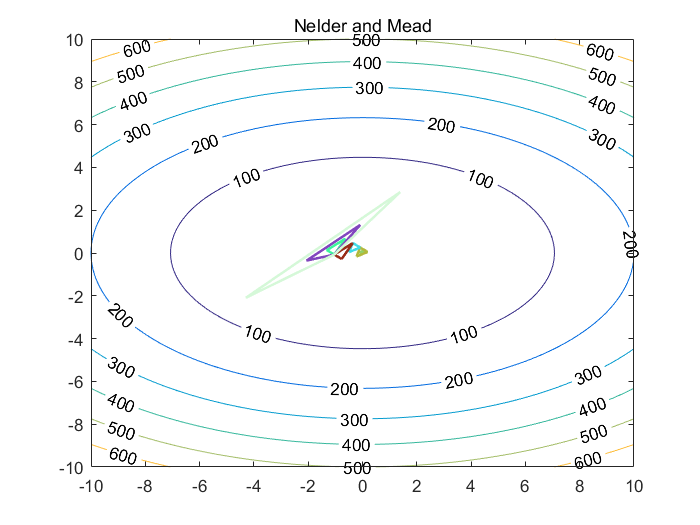
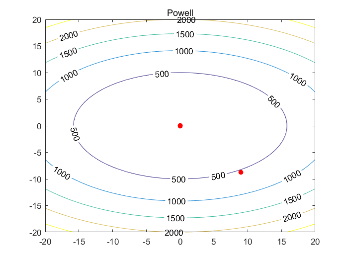

Contents
clc;
clear;
close all;
Problem 1 - find minima f(x, y) = 2*x^2 + 5*y^2
alpha = 1;
beta = 2;
gamma = 0.5;
syms x y;
dim = 2;
f = symfun(2*x^2 + 5*y^2, [x y]);
range_nedler = 10;
epsilon_nedler = 0.05;
max_iter_nedler = 50000;
[output, time, iter] = nelderMead(f, dim, range_nedler, epsilon_nedler, max_iter_nedler, alpha, beta, gamma);
fprintf('1. Nelder and Mead - It takes %fsec to generate minimum [%f] for %d iter\n', time, output, iter);
N = 10;
range_powell = 10;
epsilon_powell = 0.05;
max_iter_powell = 50000;
[output, time, iter] = powell(f, dim, N, range_powell, epsilon_powell, max_iter_powell);
fprintf('2. Powell - It takes %fsec to generate minimum [%f] for %d iter\n', time, output, iter);
1. Nelder and Mead - It takes 0.595820sec to generate minimum [0.000543] for 20 iter
2. Powell - It takes 0.247033sec to generate minimum [0.000002] for 2 iter
 